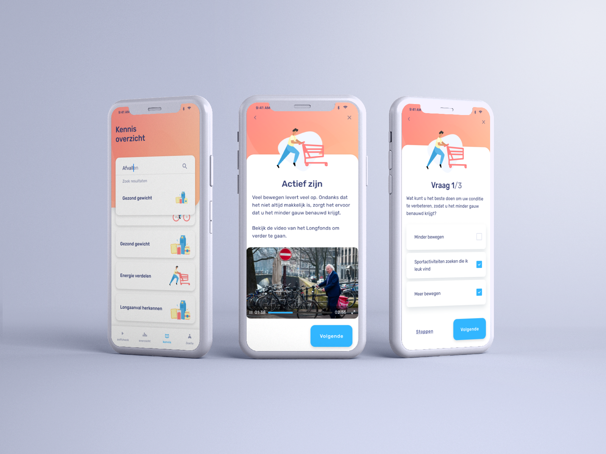
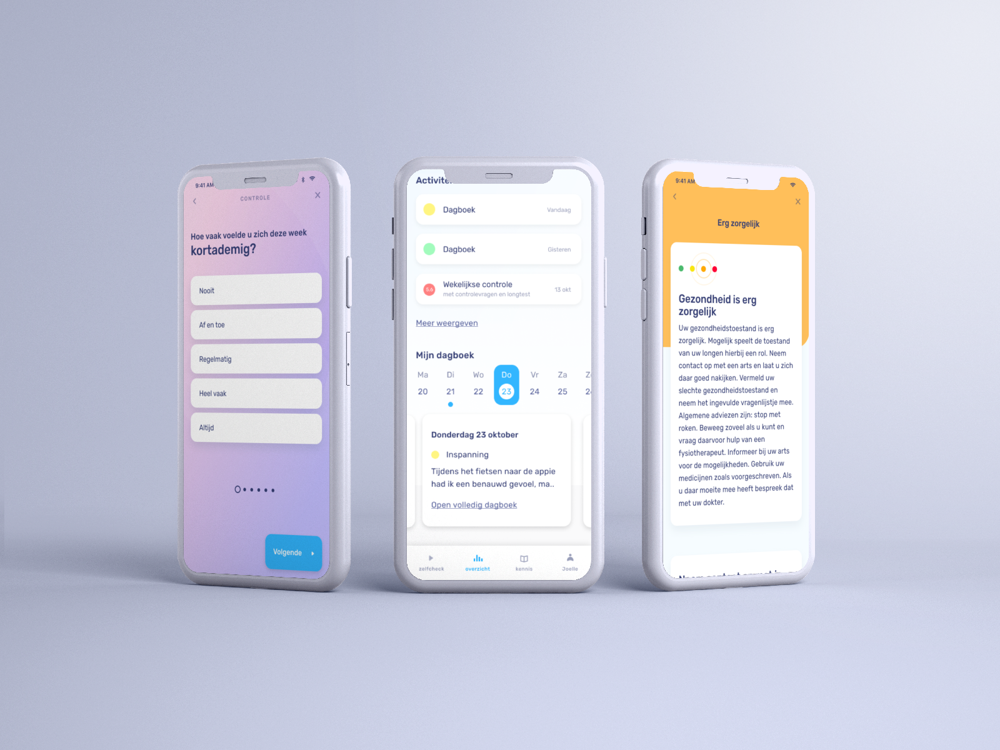
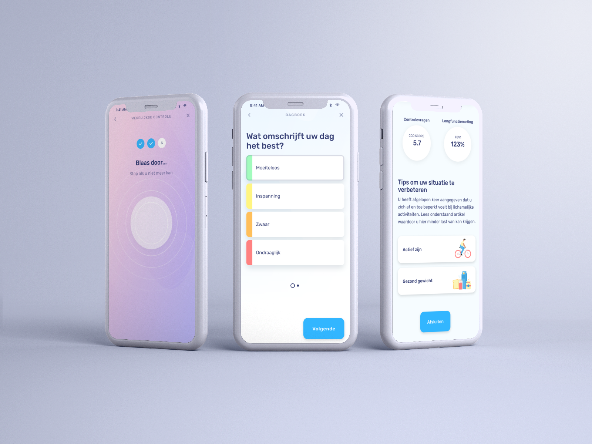

- 
COPD Kompas
Behaald cijfer: 8,5
UX Research
Figma
Prototyping
Usability testing
Interviews
Clickable demo
Probleemstelling
Astmakompas wilt inventariseren of ze samen met patiënten, specialisten en longverpleegkundigen ervoor kunnen zorgen dat mensen die COPD hebben en hulp nodig hebben, op tijd hulp krijgen. Er kan nog niet gemakkelijk achterhaald worden wat kde mate van COPD is en hoe patiënten op afstand geholpen kunnen worden. Er is op dit moment onvoldoende kennis over welke rode vlaggen er zijn, hoe de longen ervoor staan, welke vragen er gesteld moeten worden om dit te achterhalen, en wanneer en op welke manier er op tijd ingeschakeld kan worden.
Resultaat
De oplossing is een digitaal platform waar patiënten aan de hand van een officiële questionnaire (De Clinical COPD Questionnaire (CCQ) gezondheidsvragenlijst) en een blaastest via een bluetooth apparaat kunnen achterhalen wat de staat is van hun COPD. De patiënten krijgen tips over wat ze (eventueel) kunnen doen, kunnen artikelen lezen of een quiz afnemen om beter te worden in hun omgang met COPD-kompas.
Opgeleverde producten
Onderstaand zijn een paar schermen van het prototype te vinden. Bekijk ze gerust! Of klik er doorheen via het prototype.
- 
- 